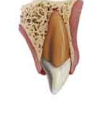

| Luxación Intrusiva |
| Imágenes |

|
| Clínica |
- El diente está desplazado dentro del alveolo. No tiene movilidad y a la percusión tiene un sonido metálico.
- Las pruebas de vitalidad daon con frecuencia resultados negativos.
- En dientes inmaduros es posible la revascularización.
|
| Radiología |
El espacio periodontal puede haber desaparecido total o parcialmente.
|
| Tratamiento |
Diente con desarrollo radicular incompleto: esperar la reerupción espontánea. Si no hay movimiento en 3 meses, realizar extrusión ortodóncica.
Diente con desarrollo radicular completo: el diente debería ser reposicionado con ortodoncia o cirugía tan pronto fuera posible. Es frecuente la aparición de necropsis pulpar y es recomendable el tratamiento de conductos con relleno de hidrócido de calcio.
|